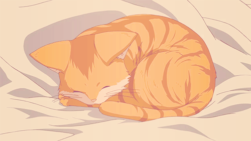
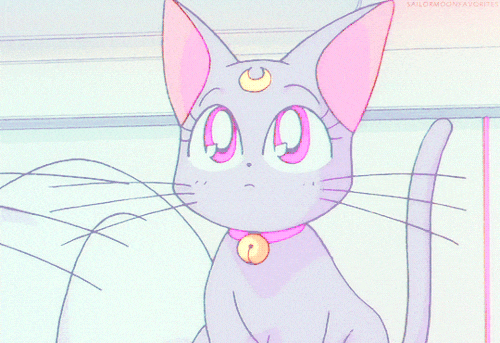

Cute cat facts
Especie más rara
Egipcios y gatos
Templo Gotokuji
Adopta
¿Por qué adoptar un gato?
1. Menos alergias y asma.
2. Transmiten calma.
3. Mejora el ánimo.
4. Menos problemas cardiovasculares.
5. Jugar con tu gato te activa.
6. Con un gato te sentirás menos solo.
¡ADOPTA CON RESPONSABILIDAD!
 